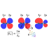
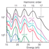
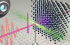

Recent Events
-  "Initiating and probing molecular modes of charge migration" 2021.12.09, 10:00 B325 Prof. Dr. Mette Gaarde, LSU
-  "A route to attosecond science" 2021.09.24, 10:30 B325 Dr. Tran Trung Luu, HKU
-  "Advanced attosecond optical spectroscopy and its application to solid physics" 2021.09.10, 15:00 B325 Dr. Matteo Lucchini, Politecnico di Milano
- "Attosecond liquid spectroscopy" 2019.08.20, 14:00 B325 Prof. Dr. Hans Jakob Woerner, ETHzurich
Recent publications
Google Scholar
Preprint versions
* Attosecond spectroscopy of size-resolved water clusters,
X. Gong', S. Heck', D. Jelovina, C.Perry, K. Zinchenko, H.J. Wörner*, Under review (2021).
* Symmetry resolved atomic photoionization phase shift by attosecond coincidence metrology,
W. Jiang, G. S. J. Armstrong, J. Tong, Y. Xu, Z. Zuo, J. Qiang, P. Lu, D. D. A. Clarke, J. Benda, H. Ni, A. Fleischer, K. Ueda, H. W. van der Hart, A. C. Brown*, X. Gong*, J. Wu*, Under review (2021).
2021
11 Asymmetric attosecond photoionization in molecular shape resonance,
X. Gong, W. Jiang, J. Tong, J. Qiang, P. Lu, H. Ni*, R. Lucchese, K. Ueda*, J. Wu*,
Physical Review X, accepted (2021).
10. Attosecond Interferometry of Shape Resonances in the Recoil Frame of CF4,
S. Heck, D. Baykusheva*, M. Han, J.-B. Ji, C. Perry, X. Gong and H. J. Wörner*,
Science advances 7, eabj8121 (2021).
2019
9. Observation of photon-nucleus angular-momentum transfer in the strong-field breaking of molecules,
X. Gong, P. He, J. Ma, W. Zhang, F. Sun, Q. Ji, K. Lin, H. Li, J. Qiang, P. Lu, H. Li, H. Zeng, J. Wu*, and F. He*,
Physical Review A 99, 063407 (2019).
2017
8. Ellipticity dependent symmetric break of doubly ionized acetylene in strong laser fields,
X. Gong*, H. Li, P. Lu, Q. Song, Q. Ji, K. Lin, W. Zhang, J. Ma, H. -X. Li, H. Zeng and J. Wu,
Journal of Optics 19, 124008 (2017).
7. Energy-resolved attosecond delays of photoelectron emission in multiphoton above threshold ionizations，
X. Gong, C. Lin, Q. Song, Kang Lin, Q. Ji, W. Zhang, J. Ma, P. Lu, H. Zeng, F. He, W. Yang*, and J. Wu*,
Phys. Rev. Lett. 118, 143203 (2017).
2016
6. Pathway-resolved photoelectron emission in dissociative ionization of molecules,
X. Gong, P. He, Q. Song, Q. Ji, K. Lin, W. Zhang, P. Lu, H. Pan, J. Ding, H. Zeng, F. He*, and J. Wu*,
Optica 3, 643 (2016).
2015
5. Channel-Resolved Above-Threshold Double Ionization of Acetylene,
X. Gong, Q. Song, Q. Ji, K. Lin, H. Pan, J. Ding, H. Zeng, and J. Wu*,
Physical Review Letter 114, 163001 (2015).
2014
4. Two-dimensional directional proton emission in dissociative ionization of H2,
X. Gong, P. He, Q. Song, Q. Ji, H. Pan, J. Ding, F. He*, H. Zeng, J. Wu*,
Physical Review Letter 113, 203001 (2014) Editors’ Suggestion.
3. Strong field dissociative double ionization of acetylene,
X. Gong, Q. Song, Q. Ji, H. Pan, J. Ding, J. Wu*, and H. Zeng,
Physical Review Letter 112, 243001 (2014).
2. Multielectron effects in strong-field dissociative ionization of molecules,
X. Gong, M. Kunitski, K. J. Betsch, Q. Song, L. Ph. H. Schmidt, T. Jahnke, Nora G. Kling, O. Herrwerth, B. Bergues, A. Senftleben, J. Ullrich, R. Moshammer, G. G. Paulus, I. Ben-Itzhak, M. Lezius, M. F. Kling, H. Zeng, R. R. Jones, and J. Wu*,
Physical Review A 89, 043429 (2014).
2013
1. Simultaneous probing of geometry and electronic orbital of ArCO by Coulomb-explosion imaging and angle-dependent tunneling rates,
X. Gong, M. Kunitski, L. Ph. H. Schmidt, T. Jahnke, A. Czasch, R. Dörner, and J. Wu*,
Physical Review A 88, 013422 (2013).